| 日付 | 2015年2月1日（日） |
|---|---|
| 山域 | 伊豆 |
| メンバー | 家族（妻、長女・3歳、長男・1歳） |
| 山行形態 | 子連れ日帰り |
| アクセス | 車、タクシー |
| ルート (Map) | ぼら納屋 (8:47) - (9:09) 門脇吊橋 (9:17) - (9:52) 伊豆四季の花公園 - (10:56) いがいが根 - (11:23) 昼食 (12:07) - (13:10) 橋立吊橋 - (13:36) 伊豆高原駅 |
寒い日が続くため、温暖な気候を求めて伊豆に向かう。
温暖な地と言っても、内陸部の高い山は雪に覆われているため、
今回は海岸線沿いの遊歩道を歩いてみる。
場所は城ヶ崎海岸。景観が素晴らしいため、多くの観光客が訪れるスポットだ。
食事処 ぼら納屋の広大な駐車場に車を停める。
駐車料金は500円/日だ。
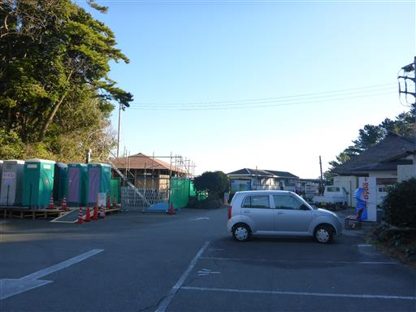
ぼら納屋はボラ漁の漁師小屋を改装して作られている。
店の側には漁に使われていたと思われる船が置かれている。

店の側から遊歩道に入っていく。
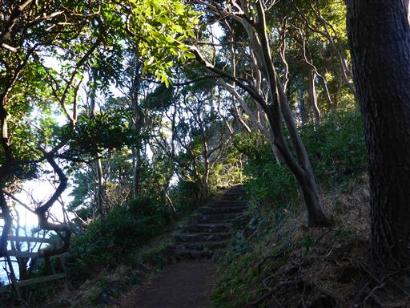
海の向こう側に美しい町が見える。斜面に白い家が密集している。
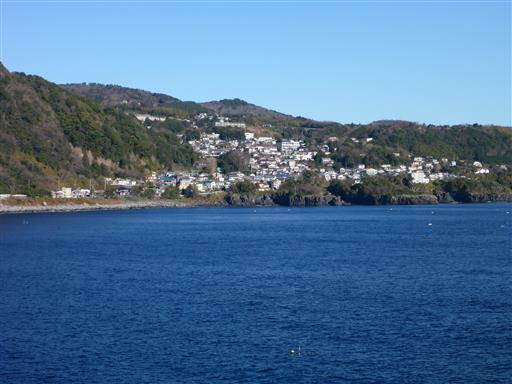
チップが埋め込まれたクッション性のある道で、非常に歩きやすい。
柔らかい地面なので、木の根が道を突き破って露出している。
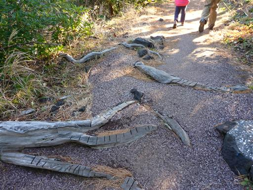
本日のコースの地図。
上の1/3がピクニカルコース、下の2/3が自然探究路だ。

左手に海がちらちらと見えてきた。
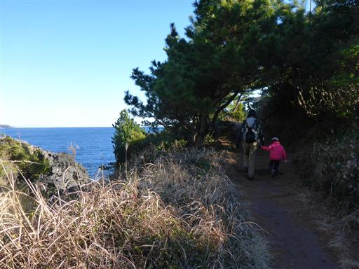
木のトンネルを潜る。
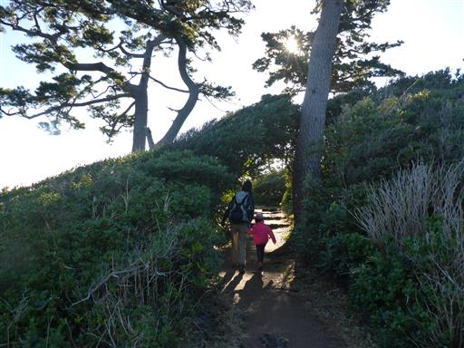
視界が広がって目の前に真っ青な海が現れる。
今まで何度かきれいな海を見たが、ここまで青い海は記憶にない。
本当に美しい青色だ。
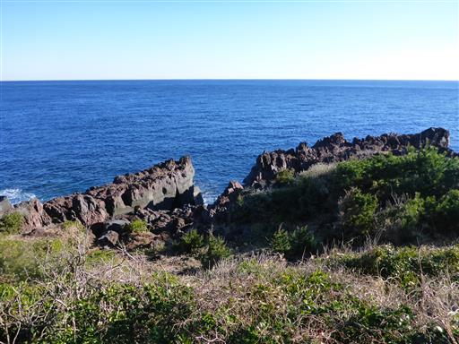
砲台跡。黒船防備のために造られたもの。
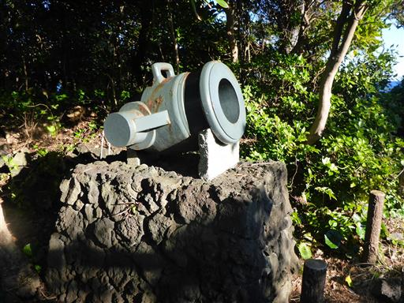
不思議な形の木。
途中で幹がなくなり、水平方向に幾つも枝分かれしている。
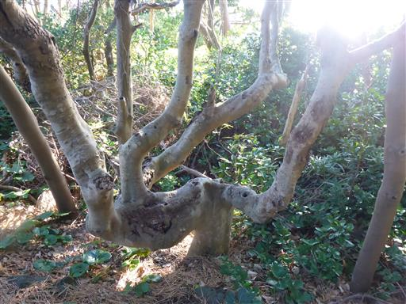
海の中に黒い溶岩が横たわっている。
城ヶ崎海岸は近くの火山の溶岩が海に流れ出て形成された。
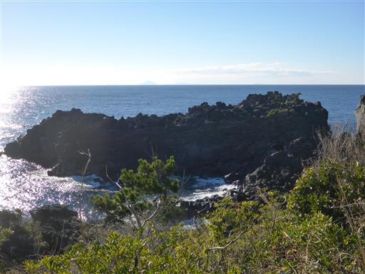
門脇吊橋に到着。本日のコースのハイライトだ。
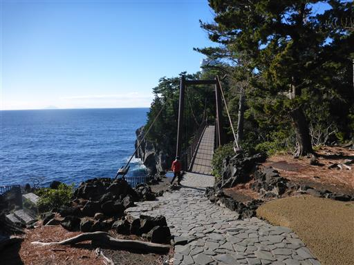
下を覗く。高度23m。なかなかの高さだ。
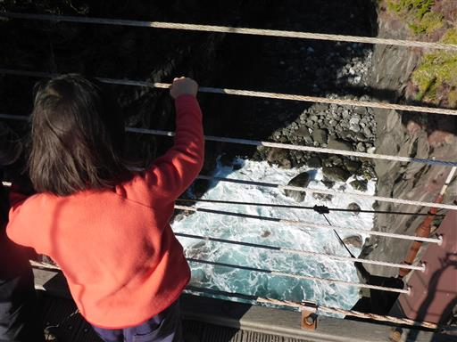
水は透明度が高く非常にきれい。
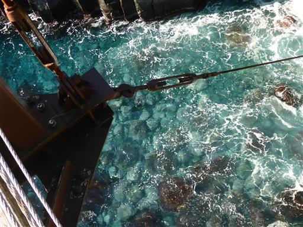
波の色まで水色で美しい。
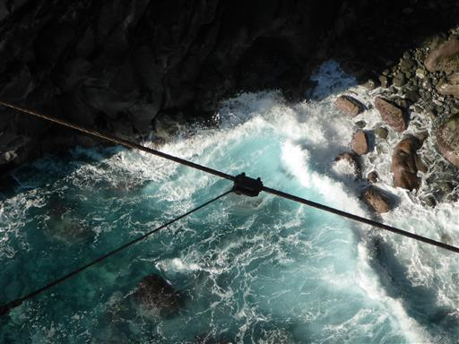
トイレに寄ったついでに、入り江の奥にある駐車場から門脇吊橋を眺める。
城ヶ崎海岸を代表する景観だ。

改めて吊橋を渡る。
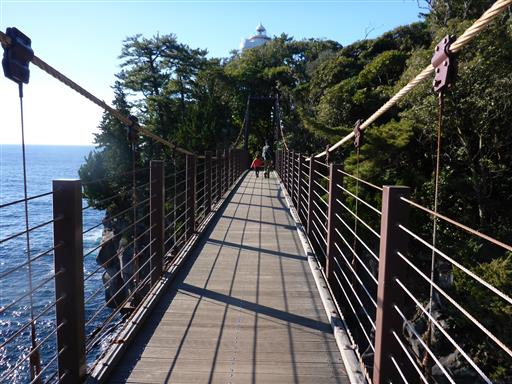
この辺りは大きく展望が広がり、景観が素晴らしい。
恐らく冬はオフシーズンだが、観光客はちらほらいる。

先には断崖絶壁の海岸線が続いている。
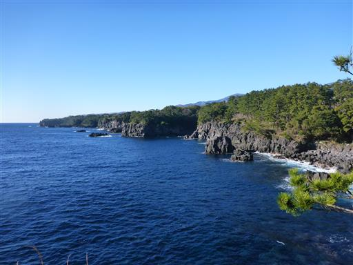
波打ち際は特に美しい
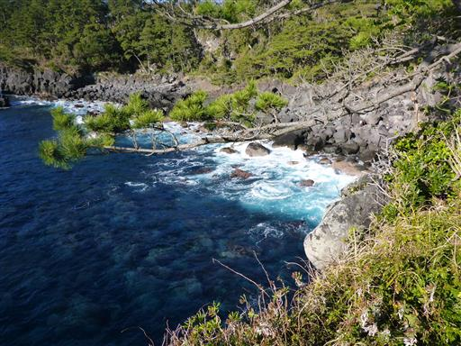
少し海岸近くに下りてみる。丸い石がごろごろしている。
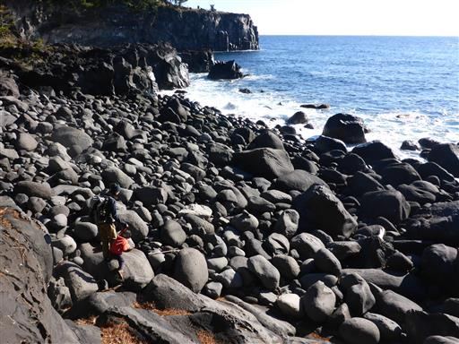
穴口。深い岩の穴から海が覗ける。
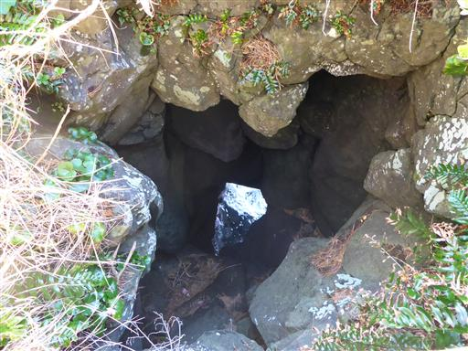
遊歩道は完全に整備されている。良いハイキングコースだ。
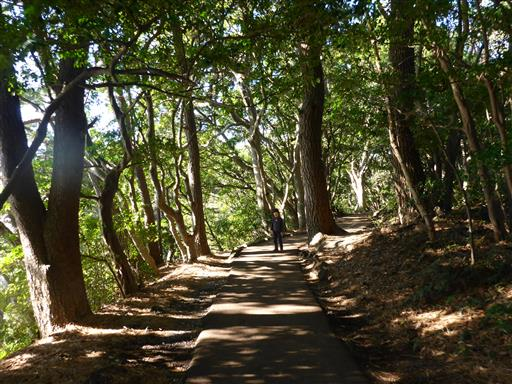
休憩場所。奥に見えるのは伊豆大島。意外に近い場所にある。
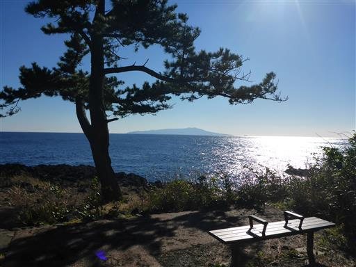
ピクニカルコースの終点に到着。
ここは伊豆四季の花公園で、大駐車場と売店がいくつかあり賑わっている。
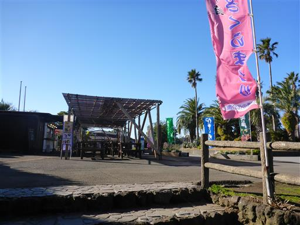
奥に見えるのは天城山方面。左のピークが万二郎岳だ。
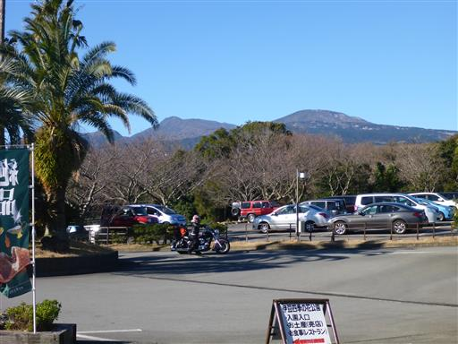
寒桜が咲き始めている。

メジロが飛んできた。
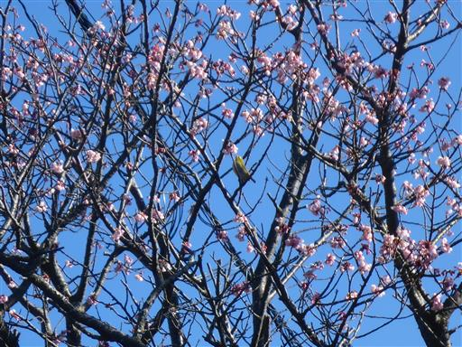
海がきれいなため、ここはスキューバダイビングの名スポットだ。
真冬だが寒くないのだろうか？。
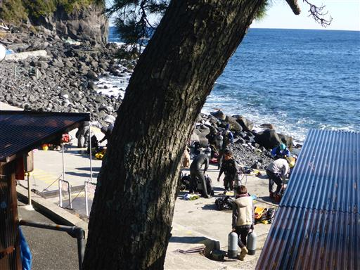
蓮着寺に到着。
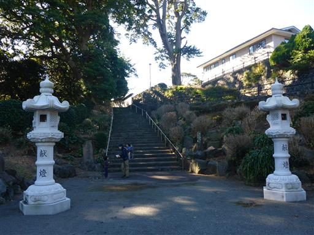
ここは日蓮宗の寺。なかなか立派な本堂だ。
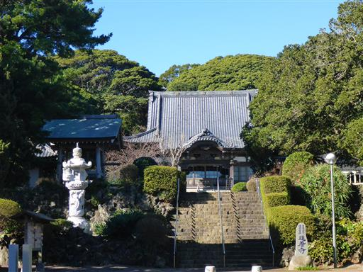
寺のすぐ側から自然探究路が始まる。
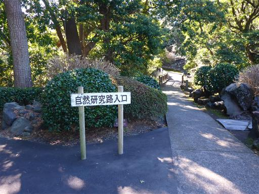
石喰いのモチノキ。石を呑みこんで木が生長したため、木の幹に幾つも石がめり込んでいる。
どのような条件がそろえば、こんな木ができるのだろう？
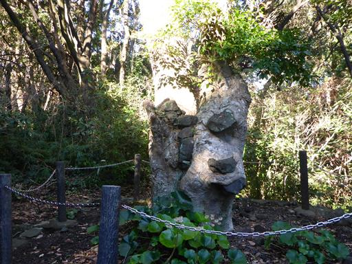
俎岩。真ん中の、海から少しだけ顔を出している小さな岩だ。
日蓮が置き去りにされ、漁師に救われたという伝承が残っている。
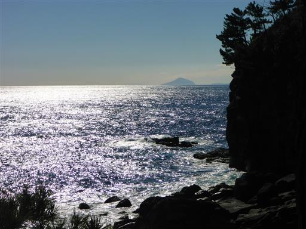
海岸沿いの道とはいえ、結構アップダウンがある。
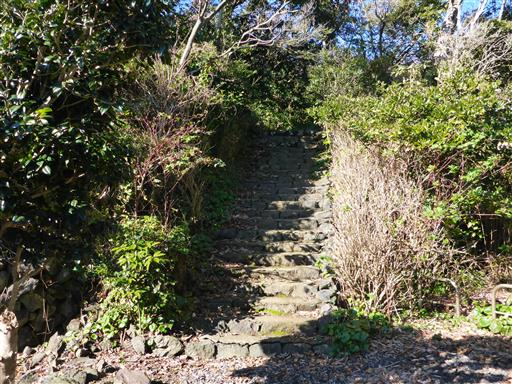
ピクニカルコースと比べると、こちらは山道っぽい。歩く人もまばらだ。
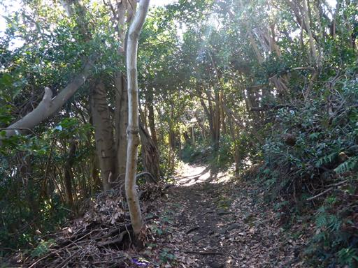
灯明台と呼ばれる場所で、釣りをしている人がいる。
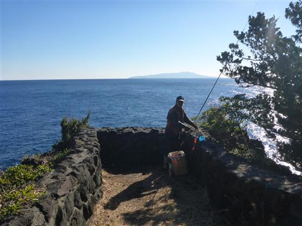
ちょうど大きな魚が釣れたところ。抜群のタイミングだ。
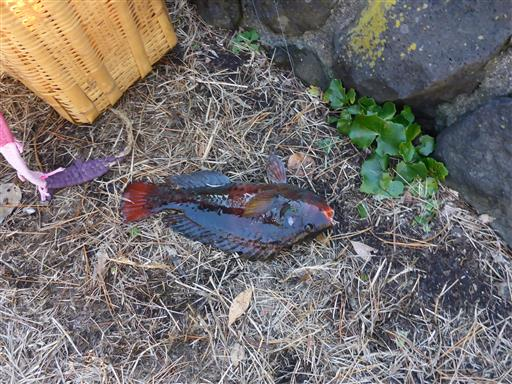
こんな高さの場所から釣っている。結構技術が要りそうだ。
少しお話してたらみかんを頂き、子供は喜んでいた。
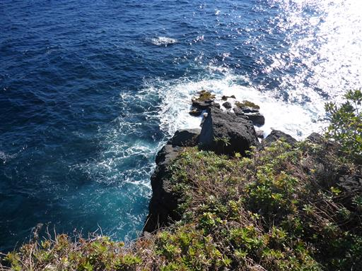
岩壁に深い亀裂が入っている。
溶岩が冷え固まる際に入ったひび割れが、浸食されてできたものだ。
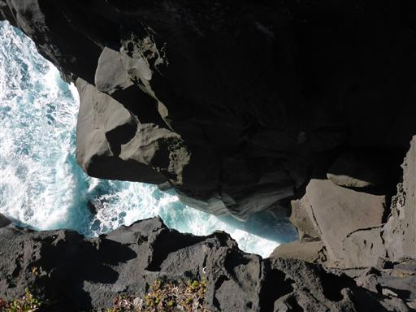
海がきれいな城ヶ崎海岸だが、森もなかなか素晴らしい。
自然探究路は所々で展望が開けるが、大半は樹林帯の中だ。
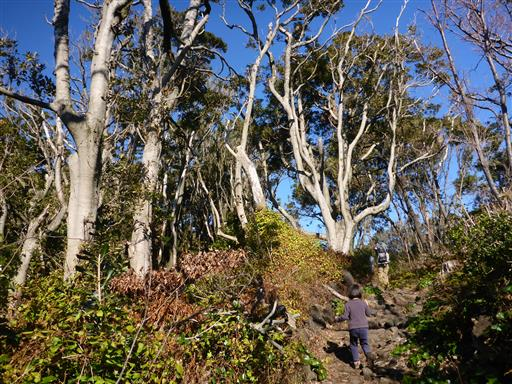
息子は何故か途中から不機嫌になったため、背負い役を妻と交代している。
いつもはグッスリ眠っているのだが、山ではないのでキャリアの揺れ方が違うのだろうか？
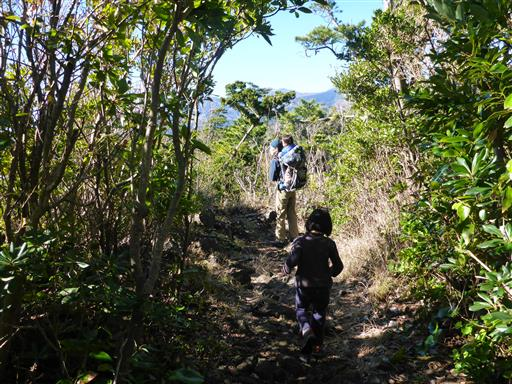
流れ出た溶岩が海に張り出した部分が所々に見られる。
休憩するのに良さそうな場所だ。あちらこちらに釣り人が見える。
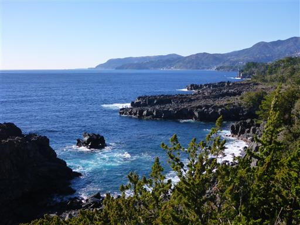
「かんのんの浜」の標識。ポットホールに入った珍しい球体の石が見られる場所だが、
詳しい位置を事前に調べてこなかったため、通り過ぎてしまった。
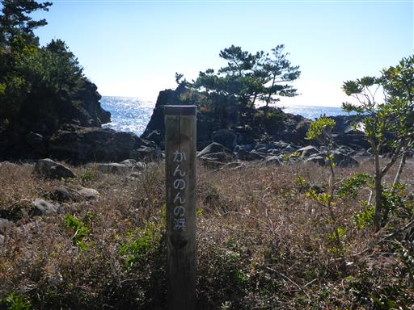
いがいが根と呼ばれる場所に到着。城ヶ崎海岸で最も広い溶岩広場だ。
近くに駐車場もあって、容易に訪れることができる。
昼食をとるのに良さそうな場所だが、まだ時間が早いため、もう少し先に進むことにする。
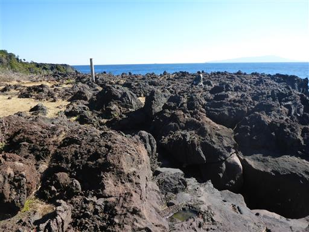
ここにも深い亀裂がある。特徴的な景観だ。
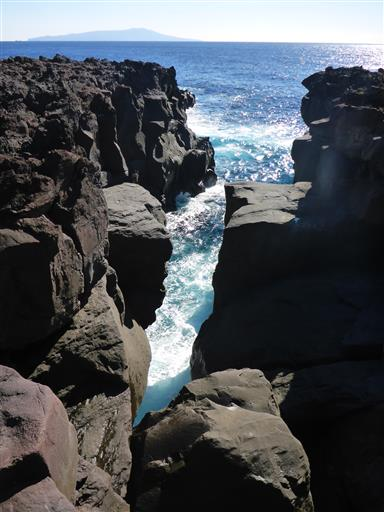
しばらく進んだ場所に海の方に続く細い道があったため、そこで昼食をとることにする。
所々に場所を示す標識が立っているのだが、ここには立っていない。
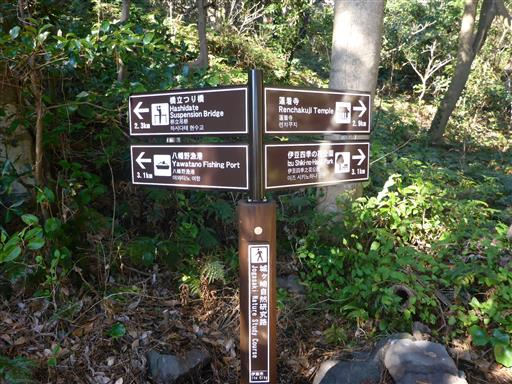
名のない場所だが、昼食をとるのに良さそうな溶岩広場だ。
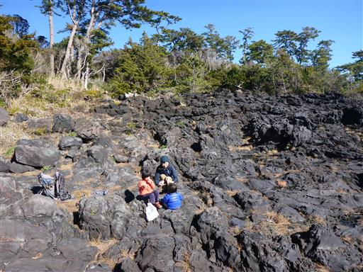
目の前に広がる青い海を眺めながら、持って来たおにぎりを頬張る。
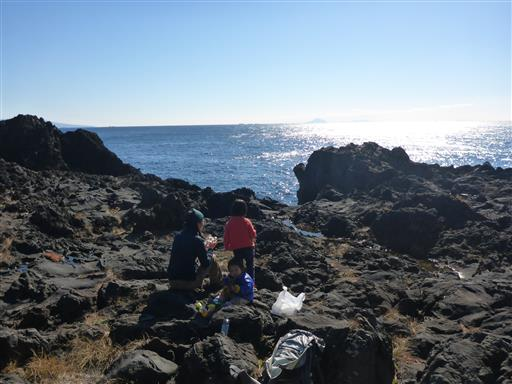
岩の上には所々に水たまりがある。
波がここまで来るとは考えにくいため、雨水がたまったものと思われる。
舐めてみれば海水か雨水か分かるが、ちょっと舐める気にはならない。
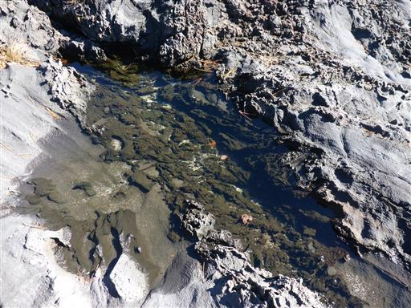
昼食をとったら少し付近をうろつく。
ここも海がきれいで、海底がぼんやりと見えている。
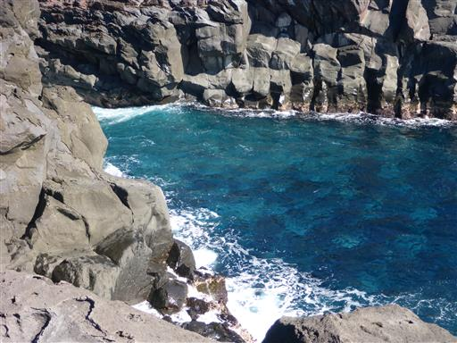
岩壁の縁に腰かけて、しばし海を眺める。
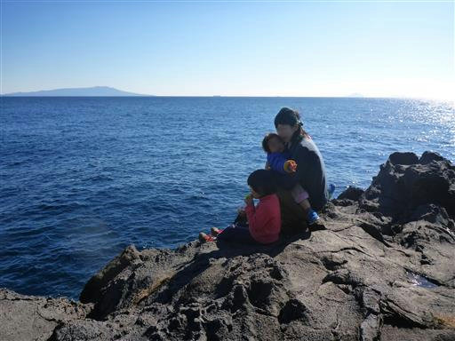
遠くに島が3つ見える。利島、新島、式根島の3島だ。

昼食をとったら先に進む。遊歩道終点まで、まだ道のりは長い。
道の脇に幹がでこぼこの木が立っている。
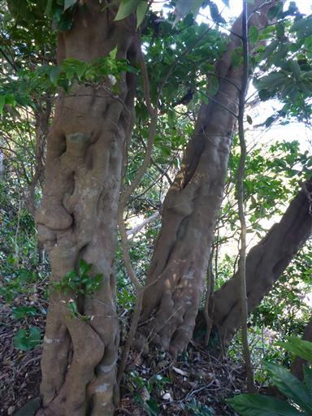
立派な古木が立っている。
すぐ側にヤマモモの解説板があったが、この木がヤマモモなのだろうか？
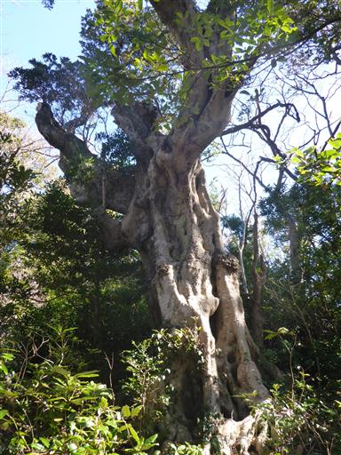
眼下に幾何学模様の岩が見える。柱状節理だ。
柱状節理の岩は、縦に亀裂が入っているため崩落しやすい
波に浸食されて大きな穴が開いている。
対島の滝。海に直接落ちる珍しい滝だ。

橋立吊橋に到着。本日2つ目の吊橋だ。
吊橋からは眼下にロッククライミングをしている人が良く見える。
この地は岩壁が多いため、ロッククライマーもあちらこちらで見かける。
松の木に栄養剤が何本も突き刺さっている。
遊歩道はもう少しだけ続くのだが、ここからの方が駅に近いため、
分岐点まで少し引き返して駅に向かうことにする。
電車の本数は少なく、駐車場は駅から離れているため、タクシーで駐車場に戻る。
城ヶ崎海岸は本当にきれいな海だった。
ハイキング以外にも、釣り、スキューバダイビング、ロッククライミングと
様々に楽しめる場所で、色々なことに挑戦したくなった一日だった。